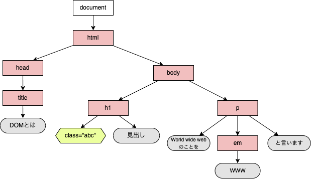

本テーマでは6回の授業を通して主にHTML、CSS、JavaScriptを用いたWebページ作成について学んだ。
この授業内では課題として Webページを作成するindex.html,数当てゲームを作成するkazuate.html,自分の選んだテーマに合わせた検索機能を実装するproject.htmlの3つに取り組んだ。
この3つの課題を通してWebページの作成、装飾、機能の実装、書き換え、イベント・通信処理等の方法について学んだ。
プロジェクト課題ではWWWのサーバへ検索し、検索結果を表示するページの作成を行なった。
このページでは世界各地の都市の天候情報を検索し、表示するという処理の実現に取り組んでいる。主に、第４回のDOMと第５回のイベント処理を用いている。
また授業の説明では書いていないが、第６回で学んだ通信処理におけるAJAX通信という通信処理を検索の際のデータの読み込みに用いている。
プロジェクト課題で作成したページ：project.html
kazuate.jsとkazuate.htmlを作成し、HTMLのコンソール上に数当てゲームを実装した。
kazuate.js内に予想と答えが一致しているか判定するhantei()メソッドを作りその結果をコンソール上に表示するようにした
今課題ではDOMを利用しJavaScriptのファイル内で実行されたhantei()メソッドの結果をコンソール上からproject.html内で表示するようにした。
kazuate.html内にラベル、テキストボックス、回答ボタンを設置する。またkazuate.js内で回答ボタンのクリックイベントハンドラとしてhantei()を登録し、hantei()内の変数yosoをテキストボックス内の数値に指定した。
数当てゲームのWebページ：kazuate.html
WebページはHTML、CSS、JavaScript、画像・音声・動画の４つの要素によって構成される
・ブロック要素とインライン要素
HTMLは要素によって構成される。要素はブロック要素(例：段落<p>や見出しなど)とインライン要素 (例：<strong>やリンクなど)の２つに分けることができる。他にも空要素による段落分けや要素への属性の追加が行える
演習の成果：演習1-4のHTMLファイル
CSSはWebページを構成する要素の１つであり、HTMLを装飾する役割がある。
CSSにはテキストの色変更や背景色の追加など様々な装飾を加えることができ、それによってより読みやすく見た目の良いWebページの作成が可能。
CSSは装飾したい要素を指定するセレスタ装飾の種類を指定するプロパティ名装飾の具体的な値を指定するプロパティ値からなる
これらはほんの一例で他にも多様な種類のCSSによって装飾を行える
演習の成果：演習2-3のHTMLファイル
JavaScriptとはプログラミング言語の一種でWebページ上にさまざまな機能を追加する。
ブラウザにはJavaScriptを利用した機能(API)がある。
名前の似ているJavaとJavaScriptだが大きな違いとしてインタプリタ言語かコンパイル言語かの違いがある。
Javaはコンパイル言語。Javaはプログラムを実行する際にjavacでコンパイル→javaで実行という2段階の手順を踏む必要がある。
JavaScriptはインタプリタ言語。JavaScriptプログラムはそのまま1行ずつ読み取りながら実行される為、Javaにおけるコンパイルの過程が省略されている
インタプリタ言語は実行の際の手間が少なく実行、デバックの行いやすさが長所である一方、エラーの発見、原因の究明が行いにくいという欠点もある。
演習の成果：課題3-1のHTMLファイル 課題3-6のHTMLファイル
DOM(Document Object Model)とはWebコンテンツの表現方法の一種。
DOMとJavaScriptを用いることでWebコンテンツ内の読み取り、変更が行えるようになり、動きのあるWebページ制作を行うことができる。
HTML文書はDOMとして上の図のように表すことができる。
*赤い四角のノードが要素、六角形のノードが属性、丸のノードがテキストに対応している
documentを基点としてHTML全てのノードを検索する処理を行なっている。
DOMの各ノードは、JavaScriptプログラムにおいてオブジェクトとして利用できる。新たなノードの取得、取得したノードの変更や、新しいオブジェクトの追加によるDOMの構成の変更等を行うことができる。
演習の成果：演習4-2~5のHTMLファイル
イベントとはWebページ上で起こせる動作や出来事のこと。
例として、キーを押す、動画の再生などといった処理がある
*イベントが発生した時に実行される処理のこと
例として、下の演習ページではマウスを重ねた時、クリックした時などのイベント処理を行なっている。
演習の成果：演習5-3のHTMLファイル
出来るだけ自分（作成側）も見る側もわかりやすいようなWebページ作成を心がけて作った。
このページの作成のデザイン面で工夫した点として、過度な装飾で逆に見えづらくなる、ということがないように出来るだけシンプルに見やすいデザインになるよう工夫した。
また、プログラムの作成においても修正点が分かりやすいように、コンソールで動作を確認した後、機能ごとに少しづつ、細かく分けて実装するようにした。
やはり、プログラム面が一番苦労した。
自分にはHTMLやJavaScriptの経験がほとんどなく不慣れだったこと、実装する前にコンソールで一度動作確認するといった慣れない手順でのプログラミングだったことなど、新しい要素に慣れるまで戸惑うことが多かった。
どうしても、意識しないと今まで学習してきたJava等の手順でプログラミングしてしまう。
JavaScriptを初めて扱った回での数当てゲームの実装時などは慣れないプログラミングだった事、課題の内容も少し大変だったこともあり苦労した。
なるべく、学習面で大事だと思った部分、自分が見る側だったら気になる部分、といったところを見やすいよう強調した。
上でも書いたが見やすいように強調される部分がくどくなりすぎないよう、他の部分が損なわれることのないよう気をつけた。
今までのプログラミングでは、言われたものを作る、機能の実装のみを考えるといった形でプログラミングで作ったものを利用することまで考えてはいなかった。
だが、今回はWebページということで見る側、利用する側のことも考えたプログラミングが要求され、ただ機能を実装するだけ、とはいかなくなった。
実際、自分が工夫した点は機能面より、見やすさ、利用のしやすさといった部分が多くなった。
社会でプログラミングをするとなれば必ず利用者はいる。もちろん作る側はそのことも考えて作成していかなければならない。
当然のことだがその事を今のうちにでも少し体感できたというのはいい経験になった。ただプログラムのやり方を学ぶ、ということ以上の意味のある授業だと感じられた。
https://developer.mozilla.org/ja/docs/Web/HTML
*授業資料に貼られていたものですが一応